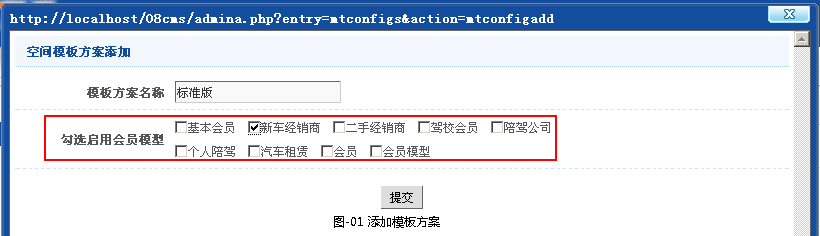
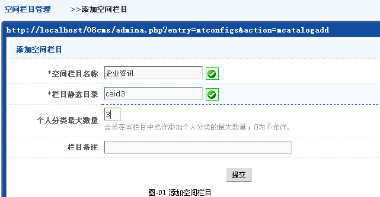
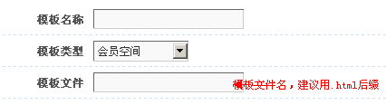
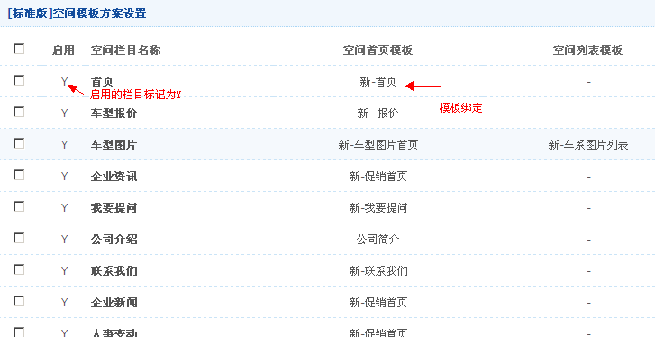
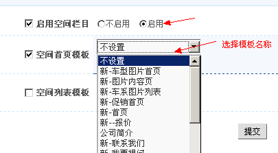

空间模板方案制作
一、前言
会员空间栏目设置流程介绍。
二、会员空间栏目管理
- 2.1添加空间模板方案
-
1.添加空间栏目，模板风格->空间模板->添加空间模板方案,如图-01所示。

- 2.2添加空间栏目
-
1.添加空间栏目，模板风格->空间模板->空间栏目管理->添加空间栏目,如图-01所示。

- 2.3会员空间栏目模板录入
- 模板风格->模板管理->常规模板库->会员空间->添加

- 2.4空间模板方案内栏目的开启和模板绑定
- 模板风格->空间模板->空间槿板方案管理->选择要配置的模板方案中的详情，为其启动相关的栏目和绑定相关模板


- 2.5栏目标识调用
- 绑定好模板后，就在前台应用该[空间模板方案]的模板上调用栏目，在模板风格->复合标识->空间类目导航调用标识,这个已在模板制作->空间类目导航中讲述。
注.会员空间栏目删除
在对应的空间模板上查找数据调用标识，将标识中的[空间栏目]选项指定的栏目删除（ctrl+点击栏目名称）即可，若是单个栏目调用即在空间模板上删除该标识即可。